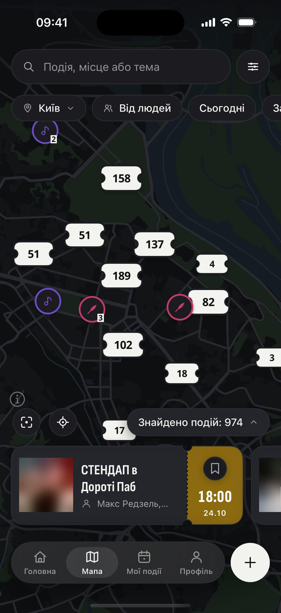
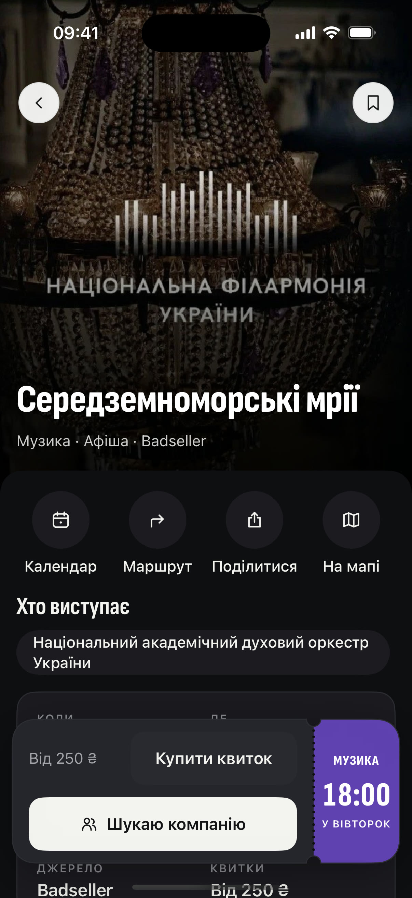

Канали
+99


✓
ти
ти з«Поряд»
vs
👀
ще гортаю 🫠
є план ✅

сотні подій міста— на одній мапі
Поряд
Є куди. Буде з ким.
а ти — зліва чи справа? 👇
безкоштовно
Apple, логотип Apple і App Store є торговельними марками Apple Inc.
Google Play і логотип Google Play є торговельними марками Google LLC.